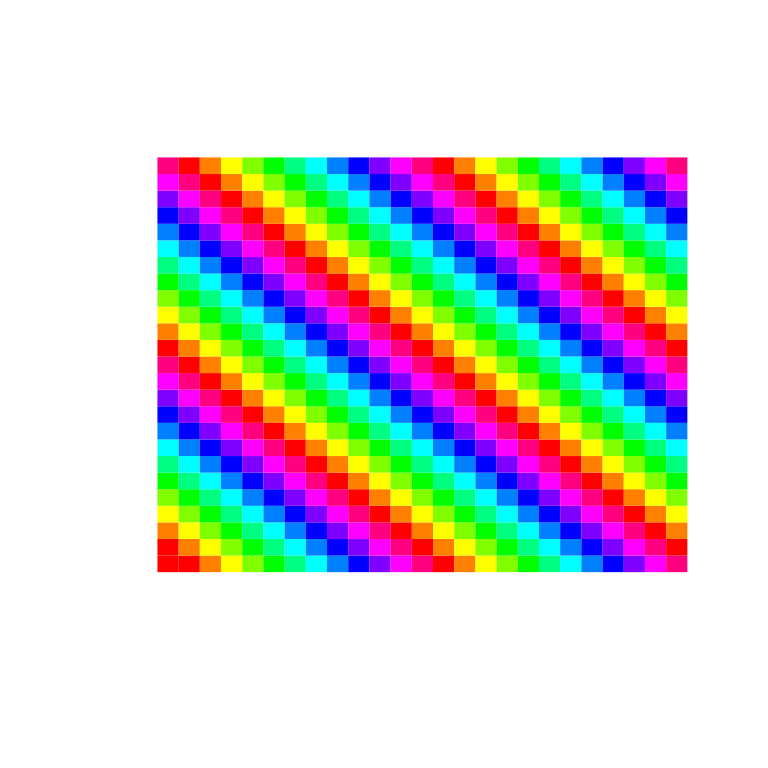

vignettes/Z0_matrix.Rmd
Z0_matrix.Rmd
mymat = matrix(1:25, ncol=5)
mymat## [,1] [,2] [,3] [,4] [,5]
## [1,] 1 6 11 16 21
## [2,] 2 7 12 17 22
## [3,] 3 8 13 18 23
## [4,] 4 9 14 19 24
## [5,] 5 10 15 20 25
class(mymat)## [1] "matrix" "array"
mode(mymat)## [1] "numeric"
dim(mymat)## [1] 5 5We are speaking figuratively here. We will not be operating directly on your screen’s pixels. But we will get the concept of a “rasterized image” – have a look at the wikipedia page for raster.
That’s a “chunky” rasterization of data in a 5x5 grid. Let’s do something more fine-grained:

We can’t easily distinguish 625 colors, so there’s a reuse of colors from row to row. But you can probably make out 625 different little square positions in this pixelated display.
Part of the rendering process involves mapping numerical data to visible colors. This is done in R using “palettes”. There is a fair amount of technicality involved. Let’s scratch the surface.
The rainbow function produces a palette. Let’s use it and then explain it.
We see that the values plotted at coordinates (1,1), (2,2) and so forth have different colors. What are these colors? Note that R actually has a color vocabulary. Here’s a little bit of it:
colors()[1:10]## [1] "white" "aliceblue" "antiquewhite" "antiquewhite1"
## [5] "antiquewhite2" "antiquewhite3" "antiquewhite4" "aquamarine"
## [9] "aquamarine1" "aquamarine2"But these nice terms for paint colors are not used for the rainbow palette.
rainbow(10)## [1] "#FF0000" "#FF9900" "#CCFF00" "#33FF00" "#00FF66" "#00FFFF" "#0066FF"
## [8] "#3300FF" "#CC00FF" "#FF0099"We can start interpreting this.
0 -> 0, 1 -> 1, ..., 9 -> 9, 10 -> A, 11 -> B, ..., 15 -> F.#abcdef and ab is the hexadecimal number for the red intensity , cd is the hex for green and ef is hex for blue.ab are interpreted in base 10 as 16*a + b. Similarly for cd and ef.Here’s a little code that decodes the two-letter hex strings.
hexi = function(str) {
stopifnot(nchar(str) == 2)
ss = strsplit(str, "")[[1]]
decode = 0:15
names(decode) = c(0:9, "A", "B", "C", "D", "E", "F")
unname(16*decode[ss[1]] + decode[ss[2]])
}
hexi("FF")## [1] 255
hexi("CC")## [1] 204
hexi("00")## [1] 0
hexi("01")## [1] 1So we can see that the rainbow output
rainbow(10)## [1] "#FF0000" "#FF9900" "#CCFF00" "#33FF00" "#00FF66" "#00FFFF" "#0066FF"
## [8] "#3300FF" "#CC00FF" "#FF0099"starts with (255,0,0), so pure red, no green or blue. The fourth point is #33FF00, strong score for green, but a little red too. This is because the rainbow palette makes smooth transitions between primary colors.
Exercise. How would you change
plot(x=1:10, y=1:10, col=rainbow(10), pch=19, cex=5,
xlab="x", ylab="y")to illustrate a rainbow color set with 20 entries?
Try it – do all the colors look different?
Exercise. Substitute topo.colors for rainbow in these plot commands. Can you justify the color scheme for topo.colors?
Hint. Think of the display for
filled.contour(volcano, color.palette=topo.colors)as a topographic map of a volcanic island.